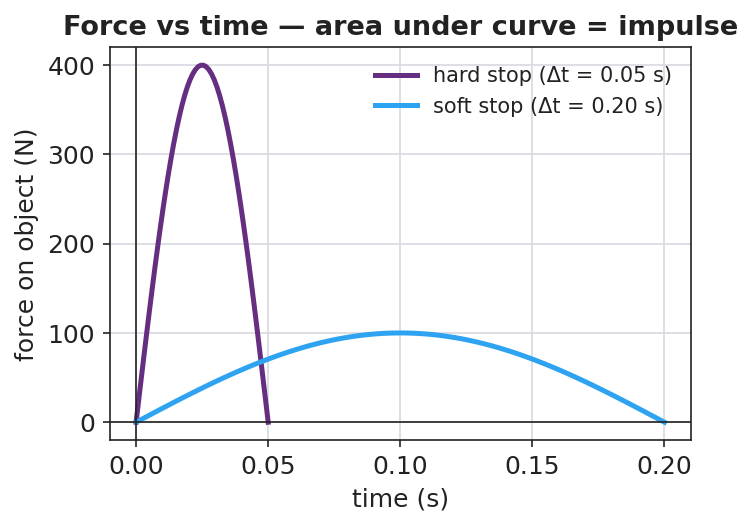
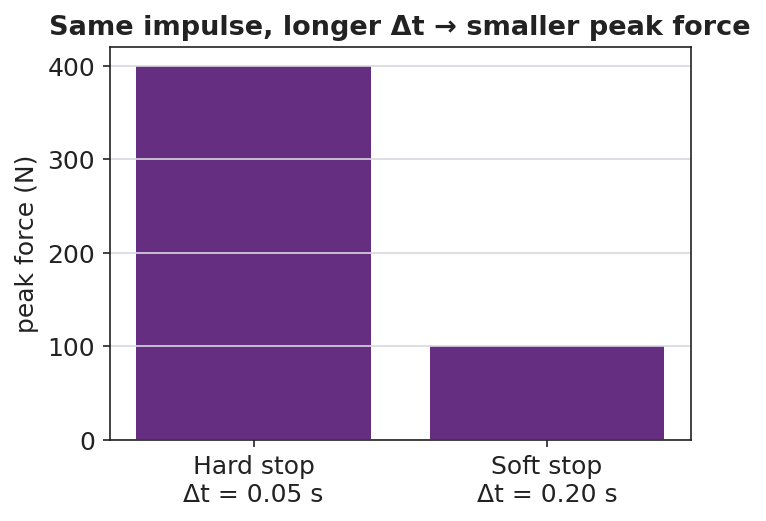

Unit: Momentum & Impulse — Lesson 02: Impulse and the Impulse–Momentum Theorem
Phenomenon
Your teacher drops two identical eggs from the same height. One lands on a hard tray and shatters; the other lands on a pillow and survives. Both eggs hit moving at the same speed and end at rest — so both have the same change in momentum. The same physics protects you in a car: watch a slow-motion airbag deploy.
Driving Question
If both eggs had the same change in momentum, why did only one break?
Notice & Wonder
Watch both eggs land. Write two things you notice and two things you wonder.
Initial Model
Sketch two force-vs-time graphs for the same egg stopping: one landing on the tray, one on the pillow. Make the total "push" (area under the curve) the same, but the shapes different. Predict which graph has the taller spike.
Investigate
The egg always undergoes the same impulse J (it stops from the same speed). Drag the slider to change the collision time Δt — a pillow stretches Δt, a tray squeezes it short. Watch the peak force F = J/Δt and the force bar respond. This is the airbag idea: more time, less force.
Fixed impulse J = 4.0 N·s · Peak force F = J/Δt = 80 N
Equal areas under the curve mean equal impulse — only the peak force differs:


Make It Make Sense
- An egg's change in momentum stopping on a pillow is the same as on a tray. What single quantity does the pillow make bigger, and what does that do to the force?
- A crumple zone makes a car body more damaged in a crash but the people inside safer. Explain using J = F·Δt.
- A 0.5 kg ball moving at 8 m/s is caught and stopped. What impulse is needed to stop it? (Give units.)
Stuck? Sentence frame
"For the same impulse, a ___ contact time makes the force ___, because F = Δp/Δt."
Key Vocabulary (max 3)
- impulse — the product of force and the time it acts, J = F·Δt; equals the change in momentum (Δp); unit N·s = kg·m/s
- force — a push or pull (N); for a fixed impulse, a smaller force results from a longer contact time
- time interval — Δt, how long a force acts (s); extending it reduces the force for the same impulse
Revise Your Model
Return to your two graphs. Label the area under each as the impulse. Then finish the Because/But/So sentence: "Both eggs have the same change in momentum because ___, but ___, so ___." Add an appositive that names impulse: "Impulse, ___, equals the change in momentum."
Return to the Phenomenon
In one Because/But/So sentence, explain why the egg on the pillow survives while the egg on the tray breaks.
Exit Ticket + Closing Reflection
- A 0.5 kg ball moving at 8 m/s is brought to rest.
(a) Find the impulse needed to stop it (units and direction). (b) If a glove stops it in 0.4 s, what average force? If a bare hand stops it in 0.05 s, what force? (c) Use J = F·Δt to explain, in one sentence, why the glove hurts less. - Reflection: Name one everyday object that secretly uses the impulse–momentum theorem to keep someone safe.
Explore Further
- PhET Collision Lab — vary elasticity to build force/time intuition
- Javalab — Impulse and Momentum
- Egg drop: pillow vs. plate
- Slow-motion airbag deployment / crash test